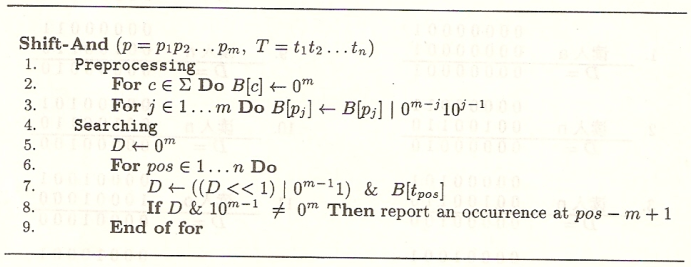

Shift-And字符串匹配算法
Table of Contents
1 前言
字符串匹配可以說是计算机科学里最为基础的研究领域之一，其应用的领域极其广泛。每次你在Chrome 浏览器里按下Ctrl-F时，在Vim、Emacs等知名编辑器里方便的搜索替换某个变量时，愉快的使用 Everthing搜索时，每次grep，find时甚至基因配对检测时其背后最为核心的技术就是字符串匹配。一个更加基础的体现是：其应用领域之广泛以致于其研究者往往也无法预料他们的研究成果可以应用到何处。
针对我们工作中的应用，就是zealot引擎里对于数据包中特定字符串的匹配。
字符串匹配问题可以理解为从给定的符号序列中找出一个具有某种属性的模式，最简单的例子就是从给定的字符序列中找出一个给定的字符串。本文将介绍这样一种匹配算法—Shift-And，理论上它比KMP算法快将近两倍。后文我们也将实际来测量它的性能。
本文主要理论来源于《Flexible Pattern Matching in Strings》一书。这是一本短小精悍的理论书籍， 它具有所有学术书籍共有的特点：高度抽象化、理论化、形式化、公式化以及符号化。正是由于这些特点，再加上工作中的需要促使本文作者完成这篇文档—一个形象的、具体的、易理解的、多示例的、符合直觉的算法描述与实现。本文作者的愿景是实现书中每个匹配算法以形成一个系列，进而可以更好的利用开源匹配库以及在必要的时候应用自己所写的匹配算法。
2 预备知识
一个字符串中所有可能出现的字符组成一个字母表，例如ATCTAGAGA字符串的字母表是{A，C，G，T}。 字符串匹配问题就是在一个大的字符串T中搜索某个字符串p的所有出现位置。其中，T称为文本，p称为模式串。T和p都定义在同一个字母表上。给定字符串x，y和z，称x是xy的一个前缀，x是yx的一个后缀， x是yxz的一个因子。字符串匹配是一个与应用场景极其相关的问题。应用场景之一指的是模式串长度以及字母表大小，依据这些场景的不同最高效的算法可能不同。
解决字符串匹配问题的方法从分类上說共有三类。本文所介绍的Shift-And算法属于前缀匹配类。这种类别的匹配算法在文本T中由前向后搜索，逐个读入文本字符，以匹配模式串p中的最长公共前缀。当这个公共前缀的长度等于模式串p的长度时，代表匹配成功。
3 Shift-And
定义“向前”：从左向右。定义向后：“从右到左”。
本节将要从各个角度来描述Shift-And算法。从具体到抽象，从示例到一般。在读者看来这样的书籍/文档流程才是符合人类认知习惯的模式。我们完成一篇文档、书籍不是要写的抽象复杂让读者觉得高深看不懂，而是以深入浅出平白的语言讲给其他人，确保他人有了形象深刻的认知，然后才能进行抽象的形式化。尽管这样的流程走下来可能比较繁多，但是没有关系，形象使人深刻，这种繁多还是值得的。
当你发现一本书籍/文档写的极其抽象而让你摸不着头脑，你大可以认为这不是你的理解力问题，而是作者的表达力问题，因为本质上没有你不能理解的东西：-）。
3.1 形象描述
本节描述以文本：
T=a n n u a l _ a n n o u n c e 1 2 3 4 5 6 7 8 9 10 11 12 13 14 15
模式串：
p=a n n o u n c e 1 2 3 4 5 6 7 8
为例。忽略其中的空格，它只是为了标下标而存在。t1代表a，而t4t5t6代表ual，t11t12t13t14代表 ounc。同理，p3p4p5代表nou。算法在运行过程中不停的读入文本T，用指针i指示当前读入文本T的位置。 i=7时，表示正在读入t7为_字符。
本算法将要维护一个由0和1组成的掩码串D，它的长度与模式串的长度p.length相同。这个掩码串表征了模式串中以p1开始向前有多少个字符与文本T中以当前读入位置i为起始（包括i）向后有多少个字符是相等的。 比如D=00010000中的1在第五位（向后看），意味着i开始向后有五个字符(包括i)与模式串的前四个字符 p1p2p3p4p5组成的字符串相等。可以看到，这样的i=12，即此时已读入到文本的第十二个字符。有了这些形象化的理解终于可以引出专业化的描述了：
“Shift-And算法维护一个字符串的集合，集合中的每个字符串即是模式串p的前缀，同时也是已读入文本的后缀”。
什么时候匹配到整个模式串呢？
可以想见D=10000000时代表成功匹配到整个模式串，结合前文的示例这个意义不言而喻。
在算法进行过程中D将变化，如何随着读入文本T而将D正确的变化呢？还是根据上述具体的例子，我们先来手工进行这个过程。首先考虑D的初始值，再次给出D表征的意义：
掩码串D表征了模式串中以p1开始向前有多少个字符与文本T中以当前读入位置i为起始（包括i）向后有多少个字符是相等的。
考虑当前的D=00000010，从T中读入下一个字符，如何维护（更新）这个D呢？还是得抓D的定义，通过定义我们可以这样，先将D左移一位，这个动作即假设这个新读入的字符与模式串的当前是相等的。然后将左移后的D与从文本中新读入的字符在模式串中的位置做与运算，如果确是相等，代表当前字符匹配成功，D左移一位，否则匹配失败，D清零。如下面的例子
T=a n n u a l _ a n n o u n c e
1 2 3 4 5 6 7 8 9 10 11 12 13 14 15
|
此时读入T的第三个字符n，而n在字符串的位置表示串为00100110，此时D的确为00000010，表示前面有两个字符an匹配了。先将D左移一位：00000100，然后做与运算：
00100110 = 00000100 ---------- 00000100
也即新读入的n的确和模式串中的n匹配了。有了这些实例化的认识，现在可以引出优雅而简洁的公式了：
D <— ((D << 1) | 1) & B[c]
这便是著名的Shift-And算法的核心思想。其中c代表由文本读入的字符。注意到公式中不仅将D左移了一位还对1进行了或运算，这是为了处理一种边界条件：空字符串也是文本的后缀。
3.2 伪码表示
下面的图展示了Shift-And的伪码表示：

Figure 1: Shift-And算法伪码表示
3.3 C代码实现
有了上面坚实的理解，下面可以给出Shift-And算法的C语言实现：
#include <string.h> #include <stdio.h> #include <stdlib.h> int preprocess(unsigned int B[], char *pat, int n) { unsigned int shift = 1; for (int i = 0; i < n; i++) { B[ (int)pat[i] ] |= shift; // printf("B[ %d ]: %u\n", (int)pat[i], B[ (int)pat[i] ]); shift <<= 1; } return 0; } int and_match(char *txt, char *pat) { int m = strlen(txt) - 1, n = strlen(pat) - 1; unsigned int B[256], D = 0, mask; for (int i = 0; i < 256; i++) B[i] = 0; preprocess(B, pat, n); mask = 1 << (n - 1); for (int i = 0; i < m; i++) { D = (D << 1 | 1) & B[(int)txt[i]]; if (D & mask) printf("%d\n", i - n + 1); } return 0; } int convert(char *filename, char *str) { long int i = 0; char ch; FILE *fp = fopen(filename, "r"); while ((ch = fgetc(fp)) != EOF) { str[i] = ch; i++; } return 0; } int main() { char *txt = (char*)malloc(3774 * sizeof(char)); char *pat = (char*)malloc(10 * sizeof(char)); convert("./largeEWD.txt", txt); convert("./pat.txt", pat); and_match(txt, pat); return 0; }
注意代码中以文件的形式打开模式串和文本串，算法实现时操作字符串比操作文件来得容易，而在处理极大量文本的匹配时，文件存储比字符串又方便的多，为了统一这二者，我写了 convert 函数来完成这二者的转换。 KMP算法实现中也有类似处理手法，两个实现都有这种处理不仅是考虑到文件与字符串转换的方便，还有就是保证二者算法的时间比较尽量单纯干净。
preprocess 是预处理函数，记录下了模式串中各个字符的位置。如果不能很理解这个函数可以打开打印注释观察输出结果。 and_match 函数是正式的匹配部分，使用了前文解释过的与公式，意义明了。
4 性能比较
4.1 KMP算法
KMP算法利用模式串自身的特点而做到模式串本身不必逐个与文本进行比较，而是可以跳过某些字符， 这样加快了比较过程。例如当前已匹配到：
txt[] = "AAAAABAAABA"
pat[] = "AAAA"
|
下一次我们要比较时，不必从pat的第一个字母开始，因为我们已经知道pat的前三个字母与模式串匹配了，即这三个字母组成的子串即是pat的前缀又是txt的后缀，所以仅需从第四个字符开始与模式串进行比较。这里自然引出疑问，对于pat中的每个字符应该跳过多少个字符不做比较呢？
KMP算法的预处理过程回答了这个问题，即针对模式串pat的每个字符，以不包括该字符本身的前缀字符串中，寻找最长的那一个，使得它既是pat的前缀又是pat的后缀。记录这个最长的长度，即是针对该字符应该跳过的个数。
下面也给出KMP算法的实现：
#include <stdio.h> #include <string.h> #include <stdlib.h> void computeLPSArray(char* pat, int M, int* lps); void KMPSearch(char* pat, char* txt) { int M = strlen(pat) - 1; int N = strlen(txt) - 1; int lps[M]; computeLPSArray(pat, M, lps); int i = 0; int j = 0; while (i < N) { if (pat[j] == txt[i]) { j++; i++; } if (j == M) { printf("%d \n", i - j); j = lps[j - 1]; } else if (i < N && pat[j] != txt[i]) { if (j != 0) j = lps[j - 1]; else i = i + 1; } } } void computeLPSArray(char* pat, int M, int* lps) { int len = 0; lps[0] = 0; int i = 1; while (i < M) { if (pat[i] == pat[len]) { len++; lps[i] = len; i++; } else { if (len != 0) { len = lps[len - 1]; } else { lps[i] = 0; i++; } } } } int convert(char *filename, char *str) { long int i = 0; char ch; FILE *fp = fopen(filename, "r"); while ((ch = fgetc(fp)) != EOF) { str[i] = ch; i++; } return 0; } int main() { char *txt = (char*)malloc(3774 * sizeof(char)); char *pat = (char*)malloc(10 * sizeof(char)); convert("./largeEWD.txt", txt); convert("./pat.txt", pat); KMPSearch(pat, txt); return 0; }
4.2 复杂度
Shift-And算法通过逐个扫描文本而完成匹配，预处理也只扫描一遍模式串故复杂度为O(m+n)。而KMP也是扫描一次文本串即可，时间复杂度也为O(m+n)，其中n为文本长度，m为模式串长度。
根据代码实现可以看到，Shift-And算法在进行相等比较时应用的与运算，在模式串长度为一个机器字内时可以利用机器的位并行而加快速度，而KMP算法是直接判断相等，应该较慢，但实际作者测量时， 300MB以下的文本数据它们的速度相差无几，我猜想编译器对这种相等判断进行了优化。但是有理论表明Shift-And算法在实际应用中的确更快，也有可能是我的测试数据集还不够大。
5 后记
研究模式串匹配算法，我总有一种不深刻的感觉，尽管也实现了，运行了，甚至与其它算法作比较了， 但是我依然无法将其简单化，如你所见，这篇教程可能并没有让你感到简单明了而又深刻，那样的效果才是真正大师的水平。通常我不能非常简单的表达出一种思想时，代表我也不是完全深刻。